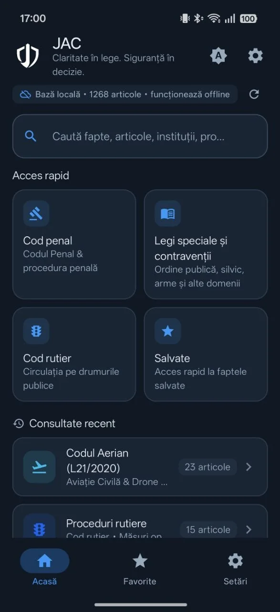
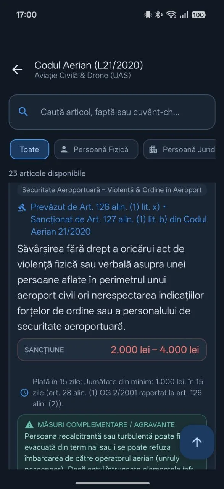
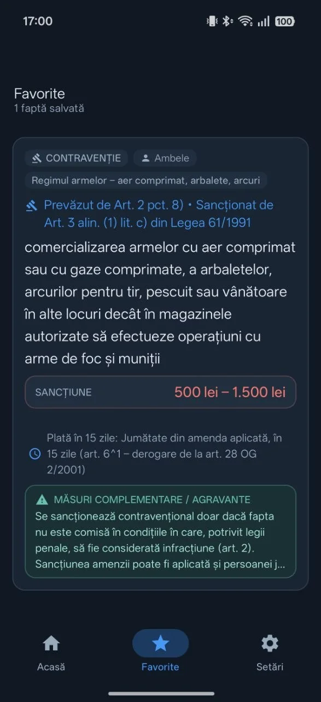

Capturile de mai jos sunt din aplicația reală. Abonamentul Premium nu este disponibil în prezent.


Interfața aplicației
Cum arată pe telefonul tău.
Capturi reale din aplicația JAC — nu machete. Fiecare ecran de mai jos este preluat așa cum apare pe un telefon Android, încadrat într-o ramă de prezentare.
01 · Catalog legislativ
Legislația, organizată pe acte normative
Fiecare grupă reunește actele normative relevante, iar în dreptul fiecărui act vezi câte fapte conține. Nu cauți prin documente întregi: intri direct în legea de care ai nevoie.
Numărul de fapte afișat pentru fiecare act normativ
22 de module și 1.268 de fapte și sancțiuni în catalogul aplicației
02 · Căutare
Cauți fapta, articolul sau cuvântul-cheie
Câmpul de căutare este primul lucru de pe ecranul principal. În versiunea Basic cauți în cadrul modulului deschis; căutarea globală în toată baza legislativă face parte din versiunea Premium și deschide prezentarea acesteia.
Căutare după faptă, articol sau cuvânt-cheie în modulul deschis
Căutare globală în întreaga bibliotecă — funcție pregătită pentru Premium
Bara de stare indică permanent baza locală, numărul de articole și starea sincronizării
03 · Fișa articolului
Încadrare, sancțiune și mod de aplicare
Fișa unei fapte afișează încadrarea legală completă, intervalul sancțiunii, condițiile de plată și măsurile complementare sau circumstanțele agravante, atunci când legea le prevede.
Încadrare cu articolul care prevede fapta și articolul care o sancționează
Intervalul sancțiunii (minim – maxim) și plata redusă în 15 zile, când se aplică
Secțiune separată pentru măsuri complementare și agravante

04 · Favorite
Faptele folosite des, la un singur tap
Cardul „Salvate” de pe ecranul principal și fila „Favorite” duc direct la faptele marcate. Favoritele sunt păstrate local, pe dispozitiv.
Acces instant la faptele salvate, din prima filă de jos
Până la 5 favorite în versiunea Basic; favorite nelimitate sunt pregătite pentru Premium
Datele rămân pe telefon — fără cont și fără transmiterea favoritelor
Capturile provin din versiunea publică a aplicației Android JAC. Abonamentul Premium nu este disponibil în prezent; versiunea Basic este gratuită și afișează reclame.
Cum funcționează
De la întrebare la răspuns, în câteva secunde
JAC este construit pentru teren: informația corectă, structurată, fără căutări interminabile.
01
Deschizi modulul potrivit
Legislația este organizată pe module tematice — de la ordinea publică la codul rutier sau penal. Fiecare modul grupează faptele, articolele și sancțiunile relevante.
02
Cauți rapid
Cauți după faptă, articol sau cuvânt-cheie direct în modul. Rezultatele apar instant, iar în căutarea globală (Premium) cauți simultan în toată baza legislativă.
03
Verifici încadrarea și sancțiunea
Fiecare faptă vine cu încadrarea legală exactă, amenda între minim și maxim și detaliile de aplicare — inclusiv reducerea la jumătate în 15 zile.
Biblioteca legislativă
22 module, 1.268 fapte și sancțiuni
Conținutul aplicației, așa cum este inclus în versiunea auditată — modulele Basic vin gratuit, modulele Premium sunt pregătite pentru accesul complet.
Numerele reflectă catalogul de conținut inclus în versiunea auditată a aplicației (v3, octombrie 2026).
Basic & Premium
Transparență completă între versiuni
Versiunea Basic este gratuită și include modulele de bază. Versiunea Premium este pregătită tehnic; prețul planificat este de 5 lei/lună. Abonamentele nu sunt disponibile în prezent.
Versiunea de lucru
Gratuit
Versiunea Basic
Acces imediat la cele 8 module legislative de bază, susținut de publicitate.
Module incluse. Legea 61/1991, Legea 60/1991, Legea 4/2008, OUG 55/2002, Legea 349/2002, Legea 217/2003, Legea 54/2012, OUG 97/2005.
Căutare în cadrul modulelor
Până la 5 favorite
Fișe complete: faptă, încadrare, amendă, reducere 15 zile
Sincronizarea actualizărilor de conținut
Fără reclame (disponibil doar în Premium)
0 lei
Pregătit tehnic
În pregătire
Versiunea Premium
Experiența completă, fără reclame, cu întreaga bibliotecă legislativă. Preț planificat: 5 lei/lună.
Toate cele 22 de module — inclusiv Codul Penal, silvic, arme, rutier complet
Căutare globală în întreaga bază legislativă
Favorite nelimitate
Fără reclame
Actualizări și completări periodice ale bibliotecii legislative
Acces la modulele Premium pregătite tehnic
Premium oferă acces la întreaga bibliotecă legislativă, fără reclame, cu actualizări și completări periodice ale conținutului legislativ.
5 lei/lună, planificat
Abonamentele Premium nu sunt disponibile în prezent. Prețul planificat pentru Premium este de 5 lei/lună. Facturarea și Google Play Billing nu sunt încă implementate; nu se percep plăți și nu sunt solicitate date financiare.
În versiunea Basic, câmpul de căutare globală este blocat și deschide prezentarea Premium; căutarea rămâne disponibilă în cadrul fiecărui modul. Favoritele Basic sunt limitate la 5.
Transparență juridică
Independență instituțională
JAC este un proiect tehnic independent. Aplicația mobilă JAC și acest site web nu sunt afiliate, asociate, autorizate sau susținute oficial de nicio instituție publică sau autoritate de stat din România (inclusiv Ministerul Afacerilor Interne, Poliția Română, Jandarmeria Română sau Poliția Locală).
Sursa textelor legale: Reproduceri ale actelor normative din domeniul public, publicate în Monitorul Oficial al României și pe portalul legislatie.just.ro.
Fără valoare de consultanță: Informațiile au scop strict documentar și metodologic. Singurul text care produce efecte juridice este cel din Monitorul Oficial.
Întrebări frecvente
Răspunsuri directe despre JAC
Informații clare despre funcționare, legislație, reclame și planurile de dezvoltare.
Este aplicația JAC afiliată vreunei instituții a statului?
Nu. JAC este o aplicație independentă de informare legislativă. Nu este afiliată, aprobată, sponsorizată sau administrată de Ministerul Afacerilor Interne (MAI), Poliția Română ori de alte instituții ale statului român.
Care este statusul lansării pe Google Play?
Aplicația JAC este publicată și disponibilă pentru descărcare prin Google Play.
Care este diferența dintre versiunea Basic și versiunea Premium?
Versiunea Basic (gratuită) oferă acces la modulele incluse gratuit, căutare în cadrul acestora, până la 5 favorite și afișează reclame. Versiunea Premium este concepută pentru acces complet la toate modulele, fără reclame și cu favorite nelimitate.
Pot cumpăra acum un abonament Premium?
Nu. Prețul planificat pentru Premium este de 5 lei/lună. Facturarea și abonamentele Premium nu sunt încă implementate în JAC. Prețul final și condițiile de achiziție vor fi afișate înainte de orice cumpărare, când abonamentul va deveni disponibil.
Ce conține aplicația?
Aplicația organizează legislația pe module tematice (de exemplu circulație rutieră, contravenții și fapte penale), cu fișe de fapte, articole și sancțiuni. O parte dintre module sunt incluse gratuit (Basic), restul sunt prevăzute pentru versiunea Premium.
Funcționează consultarea articolelor fără conexiune la internet?
Da. Conținutul legislativ este stocat local pe dispozitiv; fără conexiune puteți căuta și citi conținutul deja descărcat. Sincronizarea actualizărilor necesită internet.
Ce date colectează aplicația?
Aplicația nu are conturi de utilizator și nu colectează nume sau adrese de e-mail. Favoritele, istoricul și preferințele rămân local, pe dispozitiv. În versiunea Basic, reclamele sunt furnizate prin Google Mobile Ads (AdMob), iar opțiunile de consimțământ pentru utilizatorii din SEE/Regatul Unit sunt gestionate prin Google UMP. Detalii: Politica de Confidențialitate.
Site-ul folosește cookie-uri?
Nu. Site-ul documentelor JAC este static și nu utilizează cookie-uri sau tehnologii de urmărire. Detalii: Politica de Cookie-uri.
Asistență & comunicare
Asistență JAC
Aveți o sugestie, doriți să sesizați o neconcordanță legislativă sau aveți o întrebare despre aplicație? Trimiteți-ne un mesaj.
Nu este garantat un termen fix de răspuns; solicitările sunt analizate în funcție de disponibilitate și de posibilitatea verificării informației în sursele oficiale.
Raportarea erorilor legislative. Dacă ați identificat un articol modificat recent printr-o ordonanță sau lege nouă, vă rugăm să specificați numărul actului normativ și numărul articolului pentru o remediere promptă în următoarea actualizare.
Aplicația de e-mail a fost deschisă
Mesajul se trimite prin aplicația dumneavoastră de e-mail, la adresa oficială de contact JAC. Nu este garantat un termen fix de răspuns.